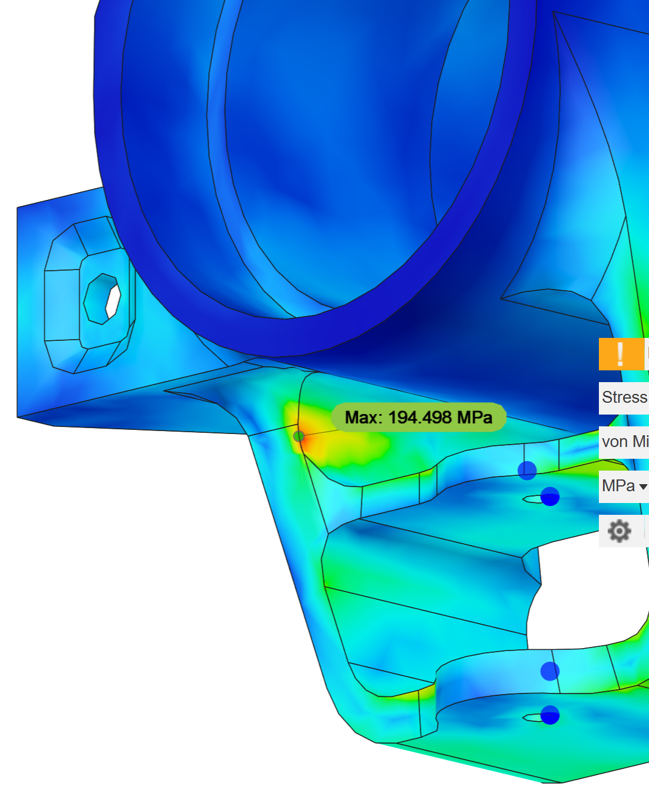
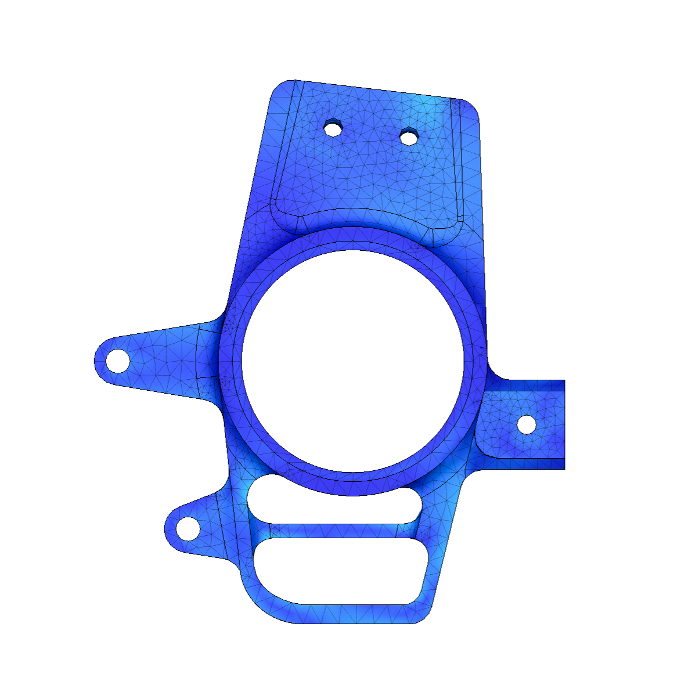
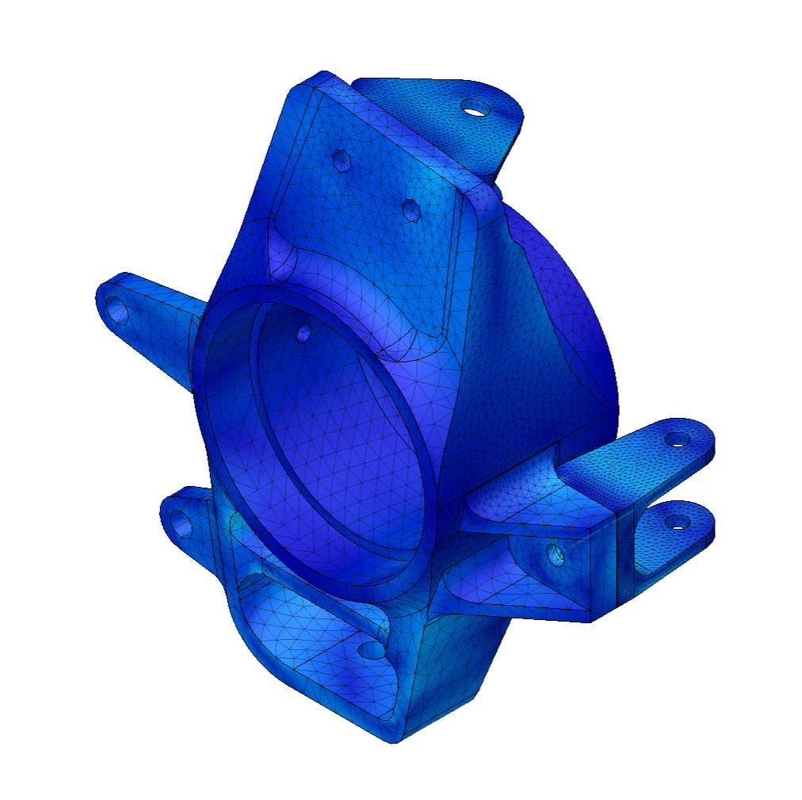
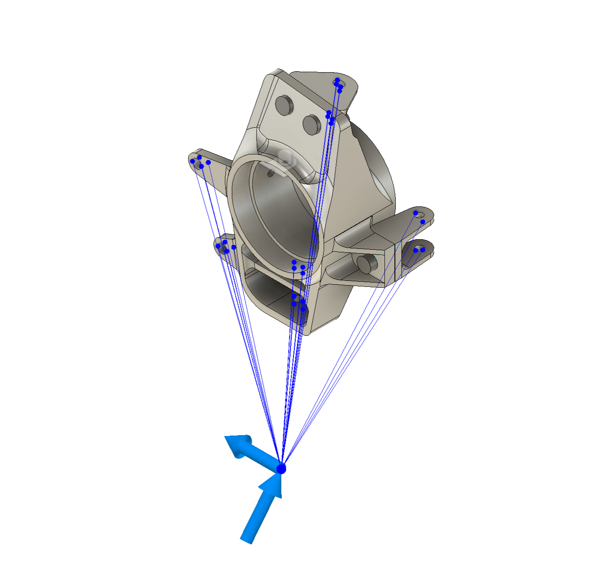
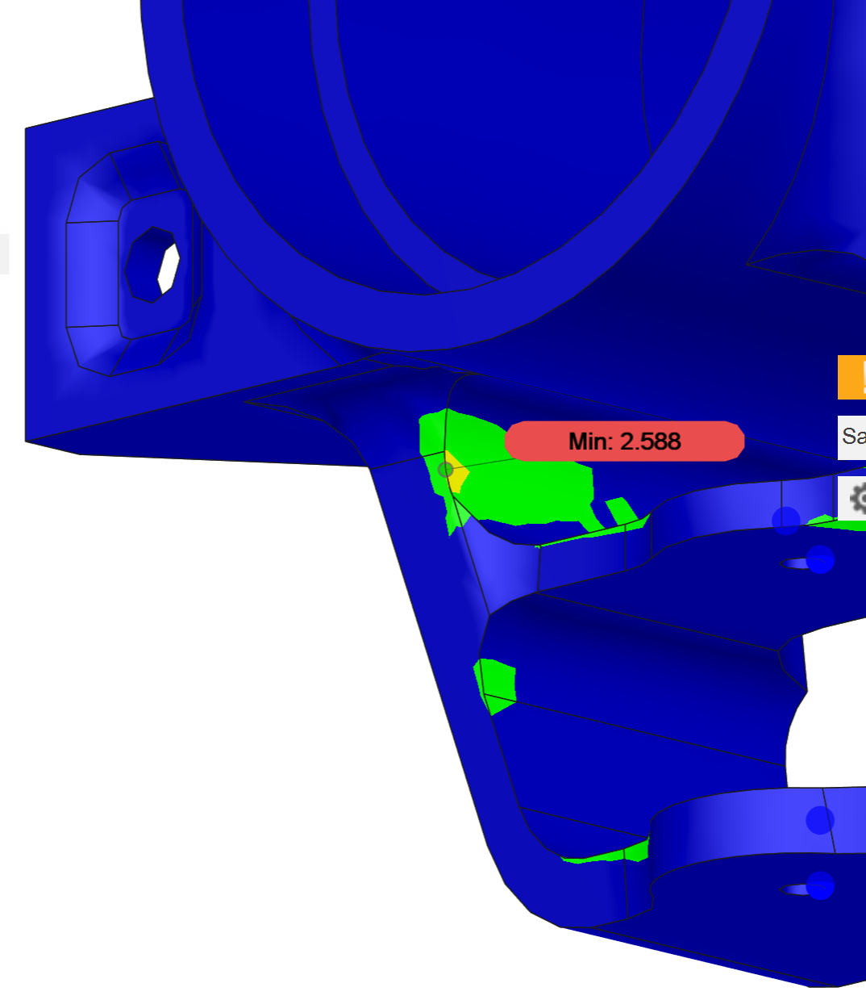

Project Alpha
A deep dive into modular architecture and 3D systems.
Project Beta
Exploring high-fidelity textures and lighting in WebGL.
A Quick Overview
This page is for a quick, general overview of different things that I've worked on without getting into the details.
FSAE Uprights
Over the course of several months, hundreds of pages of research, and hundreds of hours more of simulation, I created a set of front and rear uprights for my university's FSAE car.
Finite Element Analysis
With a load case finalized and having drawn an initial design, a simulation was created applying a remote force to the outboard attachment points, fixing the body at the wheel's bearing interfaces, and continually running, tweaking, and adding material until a reasonable safety factor was obtained. Following 100+ iterations of this process, the design was refined into a form similar to the one in the model viewer above.




Manufacturability & Final Notes
The design was continuously monitored to ensure it could be manufactured using a 5-axis CNC mill, generally keeping to a .3" minimum fillet radius to ensure a 0.5" ball end mill could be used, and design decisions were made in order to reduce the number of operations required to machine the part by sacrificing weight savings to keep some surfaces planar. The final safety factor fell somewhere around 2.9, which was determined to be enough that the part isn't expected to fail. Based on the fatigue life of aluminum 6061-T6 (page 14, R = -1 is most conservative) and assuming our load case is in the right ballpark, the lifetime would be somewhere between 100,000 and 1,000,000 cycles of the absolute worst case loading condition the upright is expected to ever face.
Project Alpha: Deep Dive
A comprehensive look at the engineering and design process.
Project Alpha: Deep Dive
A comprehensive look at the engineering and design process.
Project Alpha: Deep Dive
A comprehensive look at the engineering and design process.
DevBlocks Storage
Copy and paste blocks from here into your active pages.
Title Left
Description...
Project Title
A brief summary of the intensive project. This block acts as a portal to the full case study section.
View Case Study →


Detailed Gallery
This carousel allows users to swipe through multiple project views. It is purely for display and does not redirect the page.
View Details
3D Concept
Click and drag to rotate the model. Scroll to zoom.
Simple Text Block
Sometimes you just need a paragraph of text centered in the middle of the screen without any images.


The Prototype
Here is a fully interactive 3D render of the concept. You can rotate, zoom, and pan around the object to see the details.
Architectural View
This model demonstrates the spatial relationship between the core structure and the surrounding environment.
Download AssetsProject Sources & References
The initial and most important part of this design process was the research phase. I primarily stuck to FSAE related documentation for the creation of a load case, as well as reviewing the documents of my team's previous years to build my understanding. In total, somewhere between 500-700 pages of reading was involved in this step, and what I have listed here is what I found most useful of what I read.
I also spent time reviewing and understanding the role of an upright in the context of a car's suspension system, as well as the manufacturing constraints of the project before I jumped in.
| Abbreviated Title | Link |
|---|---|
| VT Master's Thesis: Design & Optimization of an FSAE Upright | Access |
| IOP Research: Design & Optimization of an FSAE Upright | Access |
| JCU Research: On the Design of Rear Uprights for a Race Car | Access |
| Politecnico Di Torino: Design of the Upright Assembly of a Formula Student Prototype | Access |